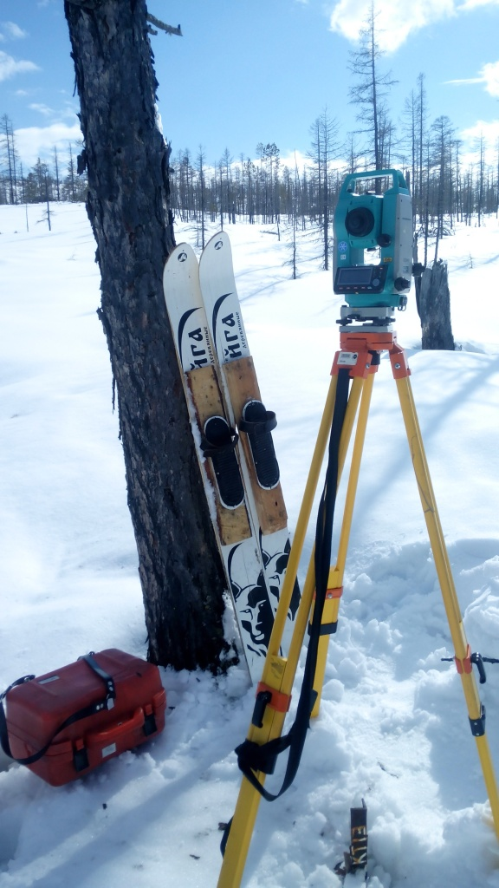
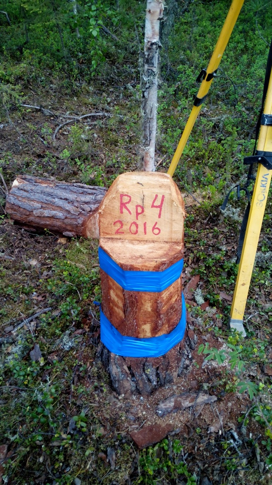

Геодезические и маркшейдерские работы
Наша компания выполняет все основные виды геодезических и маркшейдерских работ:
- Геодезическое обеспечение работ по строительству и ремонту автомобильных дорог.
- Маркшейдерское обеспечение добычных работ, в том числе наблюдение за сдвижением бортов карьеров, отвалов и за другими опасными явлениями.
- Разработка проектов маркшейдерских работ для горного производства.
- Разработка горных отводов и планов развития горных работ.
- Топографическая съемка участков, в том числе техногенно нарушенных земель для целей геологоразведочных и добычных работ открытым способом.
- Топографическая съемка участков предназначенных для объектов гражданского и промышленного строительства, в том числе высокой ответственности.
- Создание и уравнивание опорных геодезических сетей планового и высотного обоснования для топографо-геодезических работ.
- Камеральная обработка результатов полевых топографо-геодезических

